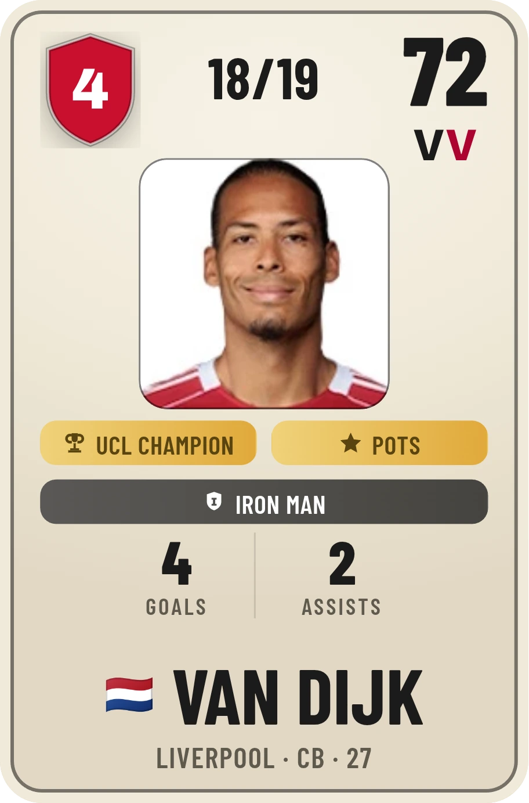

Ballon d’Or seasons the Index puts in its top three bands.
It has never seen an award. No honour, team or individual, adds a single point to a VV Score, and a Ballon d’Or adds nothing at all. They land there anyway, and 10 of the fourteen at 90.
3 of them sit inside the twelve highest-scoring seasons in the entire record, and nothing was tuned to put them there.
70The score the Index gives Luka Modric’s 2017/18, the one Ballon d’Or season it misses. That award leaned on a third straight Champions League, which the Index refuses to count, and deep midfielders are the shape it reads least well: it counts the pass completed, not the position that made it possible. One of those is a choice. The other is a limit.
54,416 seasons have been through exactly that, on the same basis , which is why a 2011 season and a 2025 one can be set against each other at all. Minutes, output, position, league, and nothing else , not even the five dimensions drawn on a player’s card. That radar is a second reading of the same season, shown beside the score, never inside it.
Some of these the Index cannot do. Some it will not. Every one is on the card it affects.

League titles, Champions Leagues, Ballons d’Or, Golden Boots. Not one moves a score by a point.
The score is finished before the vote happens. Honours sit beside the number, never inside it , and beside it they count: Compare weighs an individual award above a team one, because nothing records a player’s share of a trophy.
The scale tilts toward attack, because that is where the evidence is.
There is no number in this panel. There is no honest one to put here.
The other 19,138 are scored on goals, assists and minutes alone, and every one of their cards says so.
Every league runs the whole way. The detail does not. A season before its league’s mark is scored on goals, assists and minutes, and the card says so rather than filling the gap.
Detail begins 2014/15 Premier League · 2015/16 every other league · 2020/21 Belgium
Penalties enter the record in 2015: a taker before then is scored without them, and nothing on his card pretends otherwise.
Not one of the 650 seasons at 85 or better was played by a centre-back. Three were played by defenders at all, and all three are full-backs.
The record counts what a defender does, not what he prevents. The best defenders score below their reputation , Van Dijk sits in the low seventies , and we publish that with the reason rather than quietly moving him.
Positions are verified by hand near the top of the ladder and get coarser below.
We cannot tell you how many were checked. Nobody recorded that.
Goalkeepers are not on this scale at all.
Almost nothing a keeper does is recorded the way outfield play is.
A score is a standing, not a mark out of ten. These sit within a single point of a boundary.
Either side of a line, two seasons are closer than the labels make them look.
It rates a season, not a player. Across 4,387 players with five or more scored seasons, that is the median gap.
A rating rates a person, and a person does not have one number. Eden Hazard’s best and worst sit 64 points apart, and the dip is in the middle of his best years.
And when we change how something is scored, we publish the movement. The defensive signal was two measures blended into one number. It is one measure now: 10,770 seasons moved, not one crossed a band, and the biggest single mover was Azpilicueta’s 2018, from 70 to 72. We are telling you anyway.
Seasons reach Generational , out of 58,066 in the record.
The band edges are fixed by rank, so that number does not drift as the record grows.
It tells you when it cannot tell you. Every score carries a measured margin of error, and where two seasons fall inside it the Index says so instead of picking one.
At the very top it can split hairs. Further down it will not pretend to.
Of the 650 seasons at 85 or better were played outside the Premier League. No league has fewer than 17.
It is not a Premier League index wearing nine badges. The league a season was played in enters as a weight, not a door.
The rest of the method , what each dimension measures, how keepers are read, every tag and honour , is on the Playbook.
Every figure here is measured rather than asserted, and every one can be checked , we would rather you did. Found a season that reads oddly, or want to ask something? Tell us.